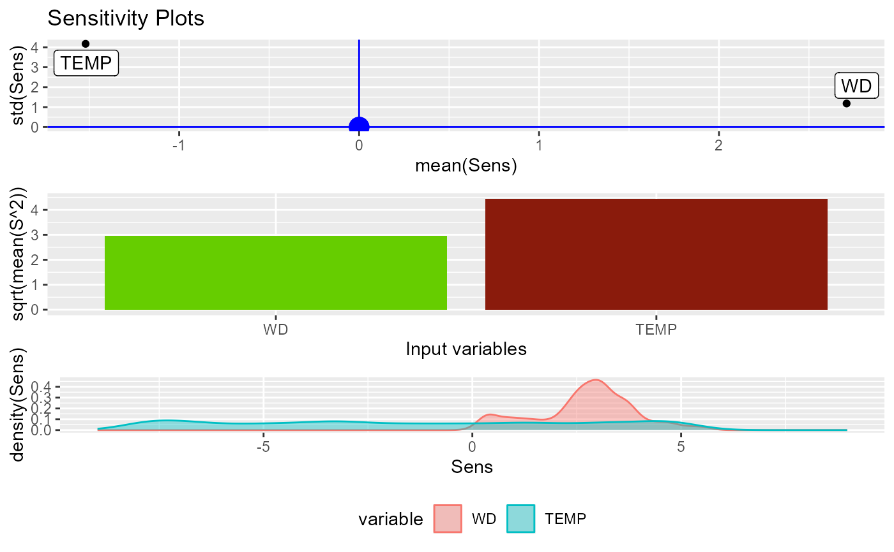
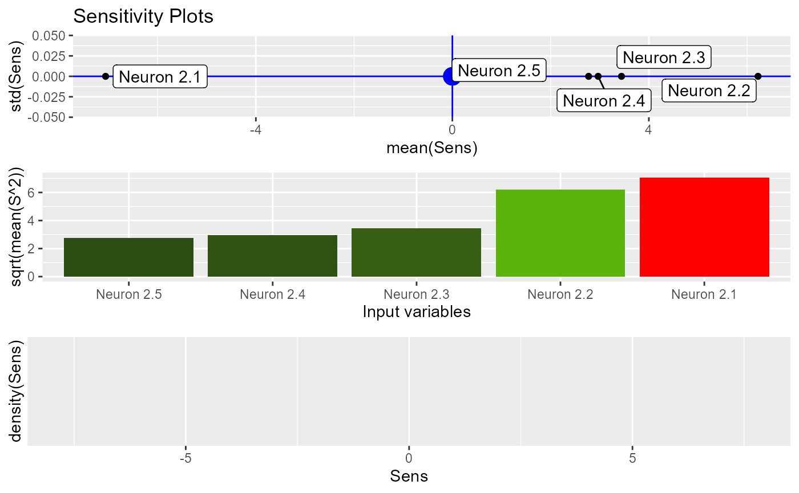
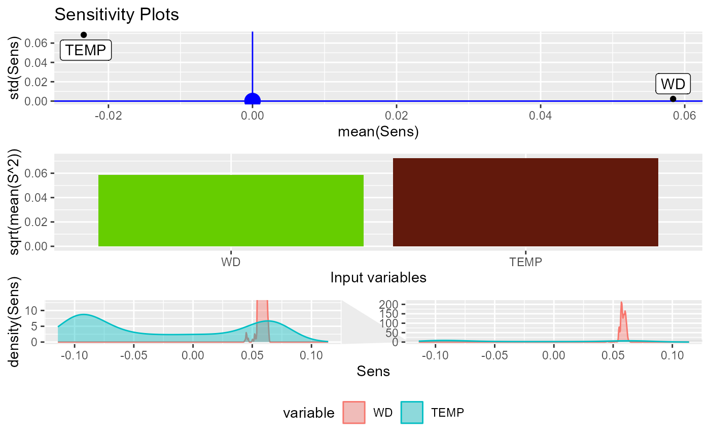
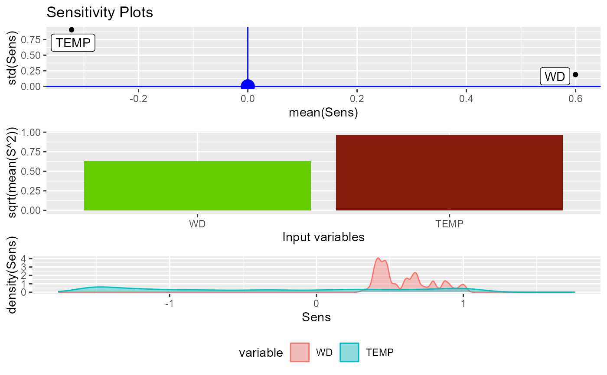
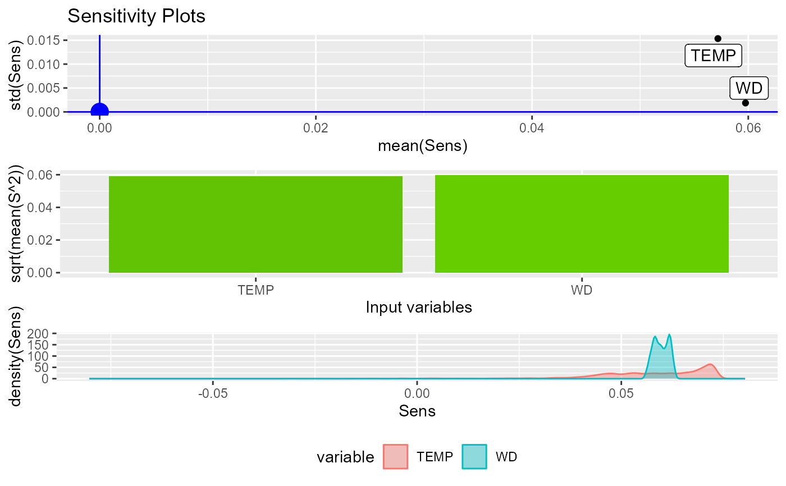
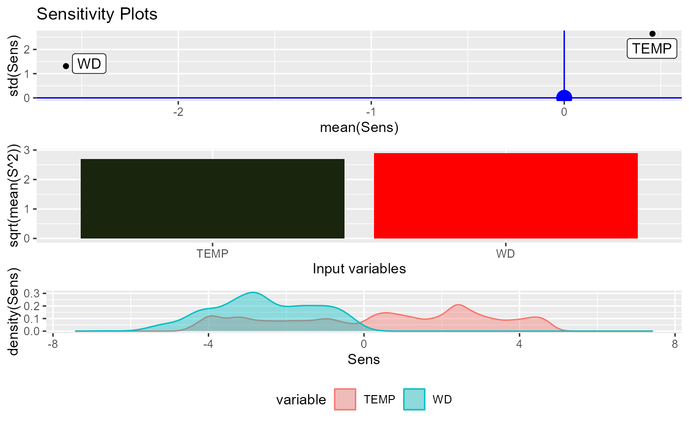
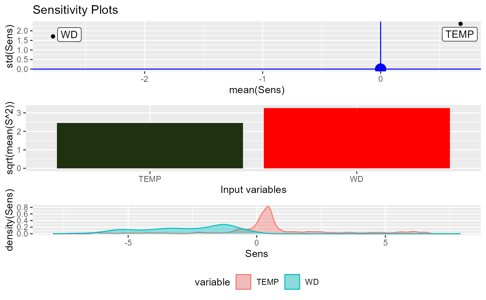

Function for evaluating the sensitivities of the inputs variables in a mlp model
Usage
SensAnalysisMLP(
MLP.fit,
.returnSens = TRUE,
plot = TRUE,
.rawSens = FALSE,
sens_origin_layer = 1,
sens_end_layer = "last",
sens_origin_input = TRUE,
sens_end_input = FALSE,
...
)
# S3 method for default
SensAnalysisMLP(
MLP.fit,
.returnSens = TRUE,
plot = TRUE,
.rawSens = FALSE,
sens_origin_layer = 1,
sens_end_layer = "last",
sens_origin_input = TRUE,
sens_end_input = FALSE,
trData,
actfunc = NULL,
deractfunc = NULL,
preProc = NULL,
terms = NULL,
output_name = NULL,
...
)
# S3 method for train
SensAnalysisMLP(
MLP.fit,
.returnSens = TRUE,
plot = TRUE,
.rawSens = FALSE,
sens_origin_layer = 1,
sens_end_layer = "last",
sens_origin_input = TRUE,
sens_end_input = FALSE,
boot.R = NULL,
boot.seed = 1,
boot.alpha = 0.05,
...
)
# S3 method for H2OMultinomialModel
SensAnalysisMLP(
MLP.fit,
.returnSens = TRUE,
plot = TRUE,
.rawSens = FALSE,
sens_origin_layer = 1,
sens_end_layer = "last",
sens_origin_input = TRUE,
sens_end_input = FALSE,
...
)
# S3 method for H2ORegressionModel
SensAnalysisMLP(
MLP.fit,
.returnSens = TRUE,
plot = TRUE,
.rawSens = FALSE,
sens_origin_layer = 1,
sens_end_layer = "last",
sens_origin_input = TRUE,
sens_end_input = FALSE,
...
)
# S3 method for list
SensAnalysisMLP(
MLP.fit,
.returnSens = TRUE,
plot = TRUE,
.rawSens = FALSE,
sens_origin_layer = 1,
sens_end_layer = "last",
sens_origin_input = TRUE,
sens_end_input = FALSE,
trData,
actfunc,
...
)
# S3 method for mlp
SensAnalysisMLP(
MLP.fit,
.returnSens = TRUE,
plot = TRUE,
.rawSens = FALSE,
sens_origin_layer = 1,
sens_end_layer = "last",
sens_origin_input = TRUE,
sens_end_input = FALSE,
trData,
preProc = NULL,
terms = NULL,
...
)
# S3 method for nn
SensAnalysisMLP(
MLP.fit,
.returnSens = TRUE,
plot = TRUE,
.rawSens = FALSE,
sens_origin_layer = 1,
sens_end_layer = "last",
sens_origin_input = TRUE,
sens_end_input = FALSE,
preProc = NULL,
terms = NULL,
...
)
# S3 method for nnet
SensAnalysisMLP(
MLP.fit,
.returnSens = TRUE,
plot = TRUE,
.rawSens = FALSE,
sens_origin_layer = 1,
sens_end_layer = "last",
sens_origin_input = TRUE,
sens_end_input = FALSE,
trData,
preProc = NULL,
terms = NULL,
...
)
# S3 method for nnetar
SensAnalysisMLP(
MLP.fit,
.returnSens = TRUE,
plot = TRUE,
.rawSens = FALSE,
sens_origin_layer = 1,
sens_end_layer = "last",
sens_origin_input = TRUE,
sens_end_input = FALSE,
...
)
# S3 method for numeric
SensAnalysisMLP(
MLP.fit,
.returnSens = TRUE,
plot = TRUE,
.rawSens = FALSE,
sens_origin_layer = 1,
sens_end_layer = "last",
sens_origin_input = TRUE,
sens_end_input = FALSE,
trData,
actfunc = NULL,
preProc = NULL,
terms = NULL,
...
)Arguments
- MLP.fit
fitted neural network model
- .returnSens
DEPRECATED
- plot
logicalwhether or not to plot the analysis. By default isTRUE.- .rawSens
DEPRECATED
- sens_origin_layer
numericspecifies the layer of neurons with respect to which the derivative must be calculated. The input layer is specified by 1 (default).- sens_end_layer
numericspecifies the layer of neurons of which the derivative is calculated. It may also be 'last' to specify the output layer (default).- sens_origin_input
logicalspecifies if the derivative must be calculated with respect to the inputs (TRUE) or output (FALSE) of thesens_origin_layerlayer of the model. By default isTRUE.- sens_end_input
logicalspecifies if the derivative calculated is of the output (FALSE) or from the input (TRUE) of thesens_end_layerlayer of the model. By default isFALSE.- ...
additional arguments passed to or from other methods
- trData
data.framecontaining the data to evaluate the sensitivity of the model- actfunc
charactervector indicating the activation function of each neurons layer.- deractfunc
charactervector indicating the derivative of the activation function of each neurons layer.- preProc
preProcess structure applied to the training data. See also
preProcess- terms
function applied to the training data to create factors. See also
train- output_name
charactername of the output variable in order to avoid changing the name of the output variable intrDatato '.outcome'- boot.R
intNumber of bootstrap samples to calculate. Used to detect significant inputs and significant non-linearities. Only available fortrainobjects. Defaults toNULL.- boot.seed
intSeed of bootstrap evaluations.- boot.alpha
floatSignificance level of statistical test.
Value
SensMLP object with the sensitivity metrics and sensitivities of
the MLP model passed to the function.
Details
In case of using an input of class factor and a package which
need to enter the input data as matrix, the dummies must be created before
training the neural network.
After that, the training data must be given to the function using the
trData argument.
Plots
Plot 1: colorful plot with the classification of the classes in a 2D map
Plot 2: b/w plot with probability of the chosen class in a 2D map
Plot 3: plot with the stats::predictions of the data provided
References
Pizarroso J, Portela J, Muñoz A (2022). NeuralSens: Sensitivity Analysis of Neural Networks. Journal of Statistical Software, 102(7), 1-36.
Examples
## Load data -------------------------------------------------------------------
data("DAILY_DEMAND_TR")
fdata <- DAILY_DEMAND_TR
## Parameters of the NNET ------------------------------------------------------
hidden_neurons <- 5
iters <- 100
decay <- 0.1
################################################################################
######################### REGRESSION NNET #####################################
################################################################################
## Regression dataframe --------------------------------------------------------
# Scale the data
fdata.Reg.tr <- fdata[,2:ncol(fdata)]
fdata.Reg.tr[,3] <- fdata.Reg.tr[,3]/10
fdata.Reg.tr[,1] <- fdata.Reg.tr[,1]/1000
# Normalize the data for some models
preProc <- caret::preProcess(fdata.Reg.tr, method = c("center","scale"))
nntrData <- predict(preProc, fdata.Reg.tr)
#' ## TRAIN nnet NNET --------------------------------------------------------
# Create a formula to train NNET
form <- paste(names(fdata.Reg.tr)[2:ncol(fdata.Reg.tr)], collapse = " + ")
form <- formula(paste(names(fdata.Reg.tr)[1], form, sep = " ~ "))
set.seed(150)
nnetmod <- nnet::nnet(form,
data = nntrData,
linear.output = TRUE,
size = hidden_neurons,
decay = decay,
maxit = iters)
#> # weights: 21
#> initial value 2487.870002
#> iter 10 value 1587.516208
#> iter 20 value 1349.706741
#> iter 30 value 1333.940734
#> iter 40 value 1329.097060
#> iter 50 value 1326.518168
#> iter 60 value 1323.148574
#> iter 70 value 1322.378769
#> iter 80 value 1322.018091
#> final value 1321.996301
#> converged
# Try SensAnalysisMLP
NeuralSens::SensAnalysisMLP(nnetmod, trData = nntrData)
#> Warning: All aesthetics have length 1, but the data has 2 rows.
#> ℹ Did you mean to use `annotate()`?

#> Sensitivity analysis of 2-5-1 MLP network.
#>
#> 1980 samples
#>
#> Sensitivities of each output (only 5 first samples):
#> $.outcome
#> WD TEMP
#> [1,] 0.6120725 0.8274999
#> [2,] 4.7762243 4.8944193
#> [3,] 3.6045326 4.4670914
#> [4,] 3.0769395 3.3320326
#> [5,] 3.7486139 4.9043203
# \donttest{
# Try SensAnalysisMLP to calculate sensitivities with respect to output of hidden neurones
NeuralSens::SensAnalysisMLP(nnetmod, trData = nntrData,
sens_origin_layer = 2,
sens_end_layer = "last",
sens_origin_input = FALSE,
sens_end_input = FALSE)
#> Warning: All aesthetics have length 1, but the data has 5 rows.
#> ℹ Did you mean to use `annotate()`?
#> Warning: Computation failed in `stat_density()`.
#> Caused by error in `optimize()`:
#> ! 'xmin' not less than 'xmax'

#> Sensitivity analysis of 2-5-1 MLP network.
#>
#> 1980 samples
#>
#> Sensitivities of each output (only 5 first samples):
#> $.outcome
#> Neuron 2.1 Neuron 2.2 Neuron 2.3 Neuron 2.4 Neuron 2.5
#> [1,] -7.059173 6.222473 3.443051 2.967425 2.773766
#> [2,] -7.059173 6.222473 3.443051 2.967425 2.773766
#> [3,] -7.059173 6.222473 3.443051 2.967425 2.773766
#> [4,] -7.059173 6.222473 3.443051 2.967425 2.773766
#> [5,] -7.059173 6.222473 3.443051 2.967425 2.773766
## Train caret NNET ------------------------------------------------------------
# Create trainControl
ctrl_tune <- caret::trainControl(method = "boot",
savePredictions = FALSE,
summaryFunction = caret::defaultSummary)
set.seed(150) #For replication
caretmod <- caret::train(form = DEM~.,
data = fdata.Reg.tr,
method = "nnet",
linout = TRUE,
tuneGrid = data.frame(size = 3,
decay = decay),
maxit = iters,
preProcess = c("center","scale"),
trControl = ctrl_tune,
metric = "RMSE")
#> # weights: 13
#> initial value 448.296994
#> iter 10 value 4.240464
#> iter 20 value 2.955813
#> iter 30 value 2.432667
#> iter 40 value 2.152339
#> iter 50 value 2.119534
#> iter 60 value 2.116452
#> iter 70 value 2.115042
#> final value 2.115024
#> converged
#> # weights: 13
#> initial value 259.256650
#> iter 10 value 5.626711
#> iter 20 value 3.294659
#> iter 30 value 2.713958
#> iter 40 value 2.218022
#> iter 50 value 2.141379
#> iter 60 value 2.100764
#> iter 70 value 2.080285
#> iter 80 value 2.075813
#> iter 90 value 2.075489
#> final value 2.075479
#> converged
#> # weights: 13
#> initial value 839.080081
#> iter 10 value 7.558987
#> iter 20 value 5.177089
#> iter 30 value 4.017037
#> iter 40 value 2.214439
#> iter 50 value 2.059848
#> iter 60 value 2.054339
#> iter 70 value 2.045965
#> iter 80 value 2.039738
#> iter 90 value 2.015979
#> iter 100 value 1.990266
#> final value 1.990266
#> stopped after 100 iterations
#> # weights: 13
#> initial value 2367.468092
#> iter 10 value 18.231718
#> iter 20 value 6.058120
#> iter 30 value 3.242985
#> iter 40 value 2.187840
#> iter 50 value 2.071775
#> iter 60 value 2.050664
#> iter 70 value 2.028564
#> iter 80 value 2.004616
#> iter 90 value 1.984345
#> iter 100 value 1.979182
#> final value 1.979182
#> stopped after 100 iterations
#> # weights: 13
#> initial value 466.520607
#> iter 10 value 26.340684
#> iter 20 value 5.710540
#> iter 30 value 4.505050
#> iter 40 value 3.920448
#> iter 50 value 2.611841
#> iter 60 value 2.175444
#> iter 70 value 2.114173
#> iter 80 value 2.113462
#> iter 90 value 2.113367
#> final value 2.113363
#> converged
#> # weights: 13
#> initial value 997.898260
#> iter 10 value 7.946815
#> iter 20 value 3.796169
#> iter 30 value 2.732974
#> iter 40 value 2.185516
#> iter 50 value 2.016426
#> iter 60 value 1.996298
#> iter 70 value 1.984364
#> iter 80 value 1.983086
#> iter 90 value 1.983051
#> final value 1.983051
#> converged
#> # weights: 13
#> initial value 926.945659
#> iter 10 value 8.424427
#> iter 20 value 3.640577
#> iter 30 value 2.446188
#> iter 40 value 2.280445
#> iter 50 value 2.270542
#> iter 60 value 2.265967
#> iter 70 value 2.255105
#> iter 80 value 2.247681
#> iter 90 value 2.244869
#> iter 100 value 2.244534
#> final value 2.244534
#> stopped after 100 iterations
#> # weights: 13
#> initial value 142.892088
#> iter 10 value 6.910998
#> iter 20 value 5.724961
#> iter 30 value 4.789805
#> iter 40 value 3.951995
#> iter 50 value 2.271814
#> iter 60 value 2.143636
#> iter 70 value 2.081638
#> iter 80 value 2.053068
#> iter 90 value 2.050443
#> iter 100 value 2.050366
#> final value 2.050366
#> stopped after 100 iterations
#> # weights: 13
#> initial value 224.855827
#> iter 10 value 6.463371
#> iter 20 value 4.498606
#> iter 30 value 4.138860
#> iter 40 value 2.669166
#> iter 50 value 2.190129
#> iter 60 value 2.057145
#> iter 70 value 2.031552
#> iter 80 value 2.030720
#> iter 90 value 2.030692
#> final value 2.030691
#> converged
#> # weights: 13
#> initial value 56.501349
#> iter 10 value 4.546989
#> iter 20 value 2.412030
#> iter 30 value 2.211975
#> iter 40 value 2.126688
#> iter 50 value 2.118982
#> iter 60 value 2.118522
#> final value 2.118318
#> converged
#> # weights: 13
#> initial value 1537.541660
#> iter 10 value 45.893358
#> iter 20 value 14.179474
#> iter 30 value 6.293025
#> iter 40 value 2.966490
#> iter 50 value 2.250200
#> iter 60 value 2.200879
#> iter 70 value 2.132716
#> iter 80 value 2.116182
#> iter 90 value 2.113110
#> final value 2.112921
#> converged
#> # weights: 13
#> initial value 3354.677303
#> iter 10 value 8.207666
#> iter 20 value 5.979884
#> iter 30 value 4.402456
#> iter 40 value 2.680091
#> iter 50 value 2.140337
#> iter 60 value 2.120667
#> iter 70 value 2.090521
#> iter 80 value 2.072754
#> iter 90 value 2.064807
#> iter 100 value 2.063714
#> final value 2.063714
#> stopped after 100 iterations
#> # weights: 13
#> initial value 1495.824272
#> iter 10 value 6.518061
#> iter 20 value 4.118493
#> iter 30 value 3.189918
#> iter 40 value 2.385578
#> iter 50 value 2.157477
#> iter 60 value 2.139096
#> iter 70 value 2.136309
#> final value 2.136306
#> converged
#> # weights: 13
#> initial value 11.757653
#> iter 10 value 3.909688
#> iter 20 value 2.556194
#> iter 30 value 2.363998
#> iter 40 value 2.217477
#> iter 50 value 2.190203
#> iter 60 value 2.185572
#> iter 70 value 2.183208
#> final value 2.183205
#> converged
#> # weights: 13
#> initial value 154.922979
#> iter 10 value 5.007005
#> iter 20 value 2.986467
#> iter 30 value 2.324922
#> iter 40 value 2.096300
#> iter 50 value 2.077648
#> iter 60 value 2.071380
#> iter 70 value 2.070058
#> final value 2.070057
#> converged
#> # weights: 13
#> initial value 1295.102618
#> iter 10 value 20.587942
#> iter 20 value 5.648115
#> iter 30 value 4.498304
#> iter 40 value 2.651133
#> iter 50 value 2.284889
#> iter 60 value 2.195444
#> iter 70 value 2.167062
#> iter 80 value 2.151623
#> iter 90 value 2.147625
#> final value 2.147598
#> converged
#> # weights: 13
#> initial value 6196.422374
#> iter 10 value 9.791647
#> iter 20 value 8.194195
#> iter 30 value 5.683012
#> iter 40 value 2.600464
#> iter 50 value 2.259054
#> iter 60 value 2.197961
#> iter 70 value 2.156120
#> iter 80 value 2.116732
#> iter 90 value 2.099782
#> iter 100 value 2.096804
#> final value 2.096804
#> stopped after 100 iterations
#> # weights: 13
#> initial value 165.586684
#> iter 10 value 6.965082
#> iter 20 value 2.942559
#> iter 30 value 2.400000
#> iter 40 value 2.192173
#> iter 50 value 2.147873
#> iter 60 value 2.145626
#> iter 70 value 2.144777
#> final value 2.144775
#> converged
#> # weights: 13
#> initial value 3685.490536
#> iter 10 value 7.497643
#> iter 20 value 4.678847
#> iter 30 value 3.198315
#> iter 40 value 2.332407
#> iter 50 value 2.266814
#> iter 60 value 2.246946
#> iter 70 value 2.230340
#> iter 80 value 2.225874
#> iter 90 value 2.223878
#> final value 2.223678
#> converged
#> # weights: 13
#> initial value 1883.675021
#> iter 10 value 9.414955
#> iter 20 value 6.244387
#> iter 30 value 3.029821
#> iter 40 value 2.441478
#> iter 50 value 2.388556
#> iter 60 value 2.310839
#> iter 70 value 2.223355
#> iter 80 value 2.200783
#> iter 90 value 2.161414
#> iter 100 value 2.149199
#> final value 2.149199
#> stopped after 100 iterations
#> # weights: 13
#> initial value 2896.671370
#> iter 10 value 5.948826
#> iter 20 value 3.887106
#> iter 30 value 2.866152
#> iter 40 value 2.358066
#> iter 50 value 2.269247
#> iter 60 value 2.244193
#> iter 70 value 2.236110
#> iter 80 value 2.235692
#> final value 2.235688
#> converged
#> # weights: 13
#> initial value 1160.170910
#> iter 10 value 31.153142
#> iter 20 value 11.439016
#> iter 30 value 5.790787
#> iter 40 value 3.100087
#> iter 50 value 2.444872
#> iter 60 value 2.285386
#> iter 70 value 2.154482
#> iter 80 value 2.141414
#> iter 90 value 2.136232
#> final value 2.135919
#> converged
#> # weights: 13
#> initial value 3189.626236
#> iter 10 value 5.430796
#> iter 20 value 3.625953
#> iter 30 value 2.730844
#> iter 40 value 2.340266
#> iter 50 value 2.247853
#> iter 60 value 2.174153
#> iter 70 value 2.141220
#> iter 80 value 2.127328
#> iter 90 value 2.098656
#> iter 100 value 2.071428
#> final value 2.071428
#> stopped after 100 iterations
#> # weights: 13
#> initial value 316.924838
#> iter 10 value 5.937193
#> iter 20 value 4.755514
#> iter 30 value 3.663735
#> iter 40 value 2.233143
#> iter 50 value 2.134806
#> iter 60 value 2.113021
#> iter 70 value 2.101975
#> iter 80 value 2.100327
#> iter 90 value 2.100020
#> final value 2.100013
#> converged
#> # weights: 13
#> initial value 1475.824755
#> iter 10 value 6.897328
#> iter 20 value 5.017823
#> iter 30 value 3.550261
#> iter 40 value 2.277808
#> iter 50 value 2.126565
#> iter 60 value 2.103660
#> iter 70 value 2.089784
#> iter 80 value 2.089397
#> final value 2.089397
#> converged
#> # weights: 13
#> initial value 2705.392001
#> iter 10 value 25.983461
#> iter 20 value 9.945895
#> iter 30 value 4.266584
#> iter 40 value 3.251963
#> iter 50 value 2.661341
#> iter 60 value 2.218021
#> iter 70 value 2.117866
#> iter 80 value 2.104051
#> iter 90 value 2.101507
#> final value 2.101324
#> converged
# Try SensAnalysisMLP
NeuralSens::SensAnalysisMLP(caretmod)
#> Warning: All aesthetics have length 1, but the data has 2 rows.
#> ℹ Did you mean to use `annotate()`?
#> Warning: minimum occurred at one end of the range

#> Sensitivity analysis of 2-3-1 MLP network.
#>
#> 1980 samples
#>
#> Sensitivities of each output (only 5 first samples):
#> $.outcome
#> WD TEMP
#> [1,] 0.05494945 0.05477037
#> [2,] 0.06038813 0.05438979
#> [3,] 0.05904747 0.06004020
#> [4,] 0.05927444 0.06659510
#> [5,] 0.05834915 0.04605626
## Train h2o NNET --------------------------------------------------------------
# Create a cluster with 4 available cores
h2o::h2o.init(ip = "localhost",
nthreads = 4)
#>
#> H2O is not running yet, starting it now...
#>
#> Note: In case of errors look at the following log files:
#> C:\Users\JPIZAR~1\AppData\Local\Temp\RtmpmwWafn\file165047a66f44/h2o_jpizarroso_started_from_r.out
#> C:\Users\JPIZAR~1\AppData\Local\Temp\RtmpmwWafn\file16506dba4019/h2o_jpizarroso_started_from_r.err
#>
#>
#> Starting H2O JVM and connecting: Connection successful!
#>
#> R is connected to the H2O cluster:
#> H2O cluster uptime: 2 seconds 810 milliseconds
#> H2O cluster timezone: Europe/Madrid
#> H2O data parsing timezone: UTC
#> H2O cluster version: 3.44.0.3
#> H2O cluster version age: 6 months and 4 days
#> H2O cluster name: H2O_started_from_R_jpizarroso_inw091
#> H2O cluster total nodes: 1
#> H2O cluster total memory: 7.91 GB
#> H2O cluster total cores: 20
#> H2O cluster allowed cores: 4
#> H2O cluster healthy: TRUE
#> H2O Connection ip: localhost
#> H2O Connection port: 54321
#> H2O Connection proxy: NA
#> H2O Internal Security: FALSE
#> R Version: R version 4.3.3 (2024-02-29 ucrt)
#> Warning:
#> Your H2O cluster version is (6 months and 4 days) old. There may be a newer version available.
#> Please download and install the latest version from: https://h2o-release.s3.amazonaws.com/h2o/latest_stable.html
#>
# Reset the cluster
h2o::h2o.removeAll()
fdata_h2o <- h2o::as.h2o(x = fdata.Reg.tr, destination_frame = "fdata_h2o")
#>
|
| | 0%
|
|======================================================================| 100%
set.seed(150)
h2omod <-h2o:: h2o.deeplearning(x = names(fdata.Reg.tr)[2:ncol(fdata.Reg.tr)],
y = names(fdata.Reg.tr)[1],
distribution = "AUTO",
training_frame = fdata_h2o,
standardize = TRUE,
activation = "Tanh",
hidden = c(hidden_neurons),
stopping_rounds = 0,
epochs = iters,
seed = 150,
model_id = "nnet_h2o",
adaptive_rate = FALSE,
rate_decay = decay,
export_weights_and_biases = TRUE)
#>
|
| | 0%
|
|======================================================================| 100%
# Try SensAnalysisMLP
NeuralSens::SensAnalysisMLP(h2omod)
#> Error in value[[3L]](cond): The training data has not been detected, load the data to the h2o cluster
# Turn off the cluster
h2o::h2o.shutdown(prompt = FALSE)
rm(fdata_h2o)
## Train RSNNS NNET ------------------------------------------------------------
# Normalize data using RSNNS algorithms
trData <- as.data.frame(RSNNS::normalizeData(fdata.Reg.tr))
names(trData) <- names(fdata.Reg.tr)
set.seed(150)
RSNNSmod <-RSNNS::mlp(x = trData[,2:ncol(trData)],
y = trData[,1],
size = hidden_neurons,
linOut = TRUE,
learnFuncParams=c(decay),
maxit=iters)
# Try SensAnalysisMLP
NeuralSens::SensAnalysisMLP(RSNNSmod, trData = trData, output_name = "DEM")
#> Warning: All aesthetics have length 1, but the data has 2 rows.
#> ℹ Did you mean to use `annotate()`?

#> Sensitivity analysis of 2-5-1 MLP network.
#>
#> 1980 samples
#>
#> Sensitivities of each output (only 5 first samples):
#> $DEM
#> WD TEMP
#> [1,] 0.6822845 1.0399880
#> [2,] 0.6925971 1.0693525
#> [3,] 0.4945469 1.0524738
#> [4,] 0.4650314 0.8402342
#> [5,] 0.4720409 0.9847080
## USE DEFAULT METHOD ----------------------------------------------------------
NeuralSens::SensAnalysisMLP(caretmod$finalModel$wts,
trData = fdata.Reg.tr,
mlpstr = caretmod$finalModel$n,
coefnames = caretmod$coefnames,
actfun = c("linear","sigmoid","linear"),
output_name = "DEM")
#> Warning: All aesthetics have length 1, but the data has 2 rows.
#> ℹ Did you mean to use `annotate()`?

#> Sensitivity analysis of 2-3-1 MLP network.
#>
#> 1980 samples
#>
#> Sensitivities of each output (only 5 first samples):
#> $DEM
#> WD TEMP
#> [1,] 0.06229568 0.05690481
#> [2,] 0.06133223 0.05872422
#> [3,] 0.06134104 0.05680759
#> [4,] 0.06159004 0.05322817
#> [5,] 0.06092965 0.06176240
################################################################################
######################### CLASSIFICATION NNET #################################
################################################################################
## Regression dataframe --------------------------------------------------------
# Scale the data
fdata.Reg.cl <- fdata[,2:ncol(fdata)]
fdata.Reg.cl[,2:3] <- fdata.Reg.cl[,2:3]/10
fdata.Reg.cl[,1] <- fdata.Reg.cl[,1]/1000
# Normalize the data for some models
preProc <- caret::preProcess(fdata.Reg.cl, method = c("center","scale"))
nntrData <- predict(preProc, fdata.Reg.cl)
# Factorize the output
fdata.Reg.cl$DEM <- factor(round(fdata.Reg.cl$DEM, digits = 1))
# Normalize the data for some models
preProc <- caret::preProcess(fdata.Reg.cl, method = c("center","scale"))
nntrData <- predict(preProc, fdata.Reg.cl)
## Train caret NNET ------------------------------------------------------------
# Create trainControl
ctrl_tune <- caret::trainControl(method = "boot",
savePredictions = FALSE,
summaryFunction = caret::defaultSummary)
set.seed(150) #For replication
caretmod <- caret::train(form = DEM~.,
data = fdata.Reg.cl,
method = "nnet",
linout = FALSE,
tuneGrid = data.frame(size = hidden_neurons,
decay = decay),
maxit = iters,
preProcess = c("center","scale"),
trControl = ctrl_tune,
metric = "Accuracy")
#> # weights: 45
#> initial value 3772.842618
#> iter 10 value 1557.564302
#> iter 20 value 1214.199134
#> iter 30 value 1110.296648
#> iter 40 value 1070.982383
#> iter 50 value 1040.282432
#> iter 60 value 1026.243143
#> iter 70 value 1022.185164
#> iter 80 value 1018.932608
#> iter 90 value 1014.806386
#> iter 100 value 1012.499658
#> final value 1012.499658
#> stopped after 100 iterations
#> # weights: 45
#> initial value 2668.172951
#> iter 10 value 1496.742417
#> iter 20 value 1187.526898
#> iter 30 value 1050.272689
#> iter 40 value 1013.322223
#> iter 50 value 996.639753
#> iter 60 value 979.316887
#> iter 70 value 969.798307
#> iter 80 value 966.613930
#> iter 90 value 965.693488
#> iter 100 value 965.463123
#> final value 965.463123
#> stopped after 100 iterations
#> # weights: 45
#> initial value 3297.203342
#> iter 10 value 1377.287449
#> iter 20 value 1112.310755
#> iter 30 value 1023.822455
#> iter 40 value 991.843628
#> iter 50 value 956.727170
#> iter 60 value 941.910334
#> iter 70 value 936.609226
#> iter 80 value 935.410703
#> iter 90 value 935.163698
#> iter 100 value 935.127337
#> final value 935.127337
#> stopped after 100 iterations
#> # weights: 45
#> initial value 3568.399296
#> iter 10 value 1489.763894
#> iter 20 value 1219.257218
#> iter 30 value 1076.771253
#> iter 40 value 1024.503423
#> iter 50 value 998.708032
#> iter 60 value 981.840999
#> iter 70 value 973.720379
#> iter 80 value 971.090791
#> iter 90 value 968.967523
#> iter 100 value 968.494390
#> final value 968.494390
#> stopped after 100 iterations
#> # weights: 45
#> initial value 3003.535668
#> iter 10 value 1439.044442
#> iter 20 value 1176.600696
#> iter 30 value 1048.481267
#> iter 40 value 1016.572547
#> iter 50 value 1011.297145
#> iter 60 value 999.404464
#> iter 70 value 988.451143
#> iter 80 value 977.282991
#> iter 90 value 972.906275
#> iter 100 value 971.896597
#> final value 971.896597
#> stopped after 100 iterations
#> # weights: 45
#> initial value 3408.995747
#> iter 10 value 1341.622904
#> iter 20 value 1089.969900
#> iter 30 value 1029.207268
#> iter 40 value 996.486089
#> iter 50 value 988.952619
#> iter 60 value 976.464472
#> iter 70 value 972.214434
#> iter 80 value 970.881761
#> iter 90 value 969.641644
#> iter 100 value 969.485114
#> final value 969.485114
#> stopped after 100 iterations
#> # weights: 45
#> initial value 4281.102149
#> iter 10 value 1513.066785
#> iter 20 value 1329.056483
#> iter 30 value 1209.982389
#> iter 40 value 1118.764207
#> iter 50 value 1076.036468
#> iter 60 value 1061.718419
#> iter 70 value 1050.693937
#> iter 80 value 1040.872146
#> iter 90 value 1029.507488
#> iter 100 value 1025.374541
#> final value 1025.374541
#> stopped after 100 iterations
#> # weights: 45
#> initial value 3265.828022
#> iter 10 value 1456.434584
#> iter 20 value 1166.808947
#> iter 30 value 1057.977863
#> iter 40 value 1008.996008
#> iter 50 value 978.114751
#> iter 60 value 970.985521
#> iter 70 value 966.104095
#> iter 80 value 963.006874
#> iter 90 value 962.094607
#> iter 100 value 961.841612
#> final value 961.841612
#> stopped after 100 iterations
#> # weights: 45
#> initial value 3019.717560
#> iter 10 value 1333.523881
#> iter 20 value 1154.064664
#> iter 30 value 1067.529755
#> iter 40 value 1054.332888
#> iter 50 value 1049.493394
#> iter 60 value 1042.420751
#> iter 70 value 1025.594053
#> iter 80 value 1018.729658
#> iter 90 value 1016.946541
#> iter 100 value 1015.397734
#> final value 1015.397734
#> stopped after 100 iterations
#> # weights: 45
#> initial value 3405.760894
#> iter 10 value 1597.431168
#> iter 20 value 1263.793552
#> iter 30 value 1114.159495
#> iter 40 value 1048.729401
#> iter 50 value 1023.871076
#> iter 60 value 976.998748
#> iter 70 value 960.770263
#> iter 80 value 954.884250
#> iter 90 value 952.488444
#> iter 100 value 951.344477
#> final value 951.344477
#> stopped after 100 iterations
#> # weights: 45
#> initial value 3013.688100
#> iter 10 value 1535.862594
#> iter 20 value 1231.453772
#> iter 30 value 1132.096002
#> iter 40 value 1106.684078
#> iter 50 value 1083.676956
#> iter 60 value 1041.694085
#> iter 70 value 1032.125938
#> iter 80 value 1022.027396
#> iter 90 value 1006.266589
#> iter 100 value 1000.802958
#> final value 1000.802958
#> stopped after 100 iterations
#> # weights: 45
#> initial value 4628.455991
#> iter 10 value 1552.025703
#> iter 20 value 1211.906415
#> iter 30 value 1084.177292
#> iter 40 value 1064.063606
#> iter 50 value 1055.265752
#> iter 60 value 1049.279896
#> iter 70 value 1040.272607
#> iter 80 value 1038.639372
#> iter 90 value 1038.099537
#> iter 100 value 1037.787531
#> final value 1037.787531
#> stopped after 100 iterations
#> # weights: 45
#> initial value 2860.694342
#> iter 10 value 1511.390857
#> iter 20 value 1168.419352
#> iter 30 value 1094.111978
#> iter 40 value 1073.168803
#> iter 50 value 1069.749263
#> iter 60 value 1066.180221
#> iter 70 value 1064.629158
#> iter 80 value 1064.226117
#> iter 90 value 1063.853095
#> iter 100 value 1062.896671
#> final value 1062.896671
#> stopped after 100 iterations
#> # weights: 45
#> initial value 3377.433754
#> iter 10 value 1446.109214
#> iter 20 value 1171.013957
#> iter 30 value 1114.422290
#> iter 40 value 1085.906251
#> iter 50 value 1056.654790
#> iter 60 value 1043.204252
#> iter 70 value 1039.982529
#> iter 80 value 1037.244251
#> iter 90 value 1036.464530
#> iter 100 value 1036.224249
#> final value 1036.224249
#> stopped after 100 iterations
#> # weights: 45
#> initial value 3253.715832
#> iter 10 value 1411.560701
#> iter 20 value 1173.605210
#> iter 30 value 1141.598323
#> iter 40 value 1110.027489
#> iter 50 value 1075.678228
#> iter 60 value 1065.287014
#> iter 70 value 1061.607689
#> iter 80 value 1054.627824
#> iter 90 value 1034.673250
#> iter 100 value 1029.300197
#> final value 1029.300197
#> stopped after 100 iterations
#> # weights: 45
#> initial value 3863.665785
#> iter 10 value 1387.778891
#> iter 20 value 1141.991241
#> iter 30 value 1113.544623
#> iter 40 value 1093.112775
#> iter 50 value 1064.466827
#> iter 60 value 1053.501083
#> iter 70 value 1035.802924
#> iter 80 value 1020.443915
#> iter 90 value 1015.693675
#> iter 100 value 1014.111725
#> final value 1014.111725
#> stopped after 100 iterations
#> # weights: 45
#> initial value 3378.665527
#> iter 10 value 1400.194414
#> iter 20 value 1134.238327
#> iter 30 value 1072.434905
#> iter 40 value 1022.352730
#> iter 50 value 1009.326061
#> iter 60 value 1003.254602
#> iter 70 value 998.622585
#> iter 80 value 996.924622
#> iter 90 value 995.431517
#> iter 100 value 995.296204
#> final value 995.296204
#> stopped after 100 iterations
#> # weights: 45
#> initial value 3778.883814
#> iter 10 value 1287.189554
#> iter 20 value 1085.911856
#> iter 30 value 1048.258887
#> iter 40 value 1031.285258
#> iter 50 value 1020.746772
#> iter 60 value 1009.982512
#> iter 70 value 1001.117193
#> iter 80 value 996.249854
#> iter 90 value 995.002293
#> iter 100 value 994.464160
#> final value 994.464160
#> stopped after 100 iterations
#> # weights: 45
#> initial value 3120.123677
#> iter 10 value 1354.765028
#> iter 20 value 1127.326225
#> iter 30 value 1030.192879
#> iter 40 value 995.812629
#> iter 50 value 987.332787
#> iter 60 value 980.506578
#> iter 70 value 976.439833
#> iter 80 value 975.171226
#> iter 90 value 974.762849
#> iter 100 value 974.669379
#> final value 974.669379
#> stopped after 100 iterations
#> # weights: 45
#> initial value 4498.743913
#> iter 10 value 1444.335556
#> iter 20 value 1196.519410
#> iter 30 value 1099.018244
#> iter 40 value 1029.077344
#> iter 50 value 1005.258084
#> iter 60 value 997.634916
#> iter 70 value 996.394696
#> iter 80 value 995.712015
#> iter 90 value 995.645881
#> iter 100 value 995.634593
#> final value 995.634593
#> stopped after 100 iterations
#> # weights: 45
#> initial value 4178.969476
#> iter 10 value 1484.773196
#> iter 20 value 1236.558325
#> iter 30 value 1131.376400
#> iter 40 value 1058.462683
#> iter 50 value 1018.919757
#> iter 60 value 1006.929988
#> iter 70 value 1000.924164
#> iter 80 value 997.057751
#> iter 90 value 992.146696
#> iter 100 value 990.467451
#> final value 990.467451
#> stopped after 100 iterations
#> # weights: 45
#> initial value 3763.027227
#> iter 10 value 1502.580970
#> iter 20 value 1286.900665
#> iter 30 value 1169.576206
#> iter 40 value 1122.939531
#> iter 50 value 1108.972049
#> iter 60 value 1104.953532
#> iter 70 value 1103.270073
#> iter 80 value 1101.645238
#> iter 90 value 1098.946203
#> iter 100 value 1095.719635
#> final value 1095.719635
#> stopped after 100 iterations
#> # weights: 45
#> initial value 3634.283962
#> iter 10 value 1393.174055
#> iter 20 value 1064.065558
#> iter 30 value 998.290332
#> iter 40 value 973.809987
#> iter 50 value 963.302264
#> iter 60 value 949.245382
#> iter 70 value 943.582074
#> iter 80 value 942.712725
#> iter 90 value 942.090755
#> iter 100 value 941.998670
#> final value 941.998670
#> stopped after 100 iterations
#> # weights: 45
#> initial value 4122.006202
#> iter 10 value 1440.624472
#> iter 20 value 1201.124592
#> iter 30 value 1081.368683
#> iter 40 value 1019.710036
#> iter 50 value 998.220181
#> iter 60 value 991.313592
#> iter 70 value 988.455638
#> iter 80 value 986.674128
#> iter 90 value 985.122136
#> iter 100 value 984.455611
#> final value 984.455611
#> stopped after 100 iterations
#> # weights: 45
#> initial value 3169.917474
#> iter 10 value 1708.163015
#> iter 20 value 1275.618128
#> iter 30 value 1086.379758
#> iter 40 value 1017.730370
#> iter 50 value 994.236230
#> iter 60 value 984.400401
#> iter 70 value 982.537214
#> iter 80 value 981.070886
#> iter 90 value 980.488255
#> iter 100 value 980.416752
#> final value 980.416752
#> stopped after 100 iterations
#> # weights: 45
#> initial value 3805.876854
#> iter 10 value 1440.491291
#> iter 20 value 1164.498683
#> iter 30 value 1068.693224
#> iter 40 value 1030.794446
#> iter 50 value 1012.456002
#> iter 60 value 1005.801464
#> iter 70 value 1003.516310
#> iter 80 value 1002.997394
#> iter 90 value 1002.812312
#> iter 100 value 1002.764592
#> final value 1002.764592
#> stopped after 100 iterations
# Try SensAnalysisMLP
NeuralSens::SensAnalysisMLP(caretmod)
#> Warning: All aesthetics have length 1, but the data has 2 rows.
#> ℹ Did you mean to use `annotate()`?
#> Warning: minimum occurred at one end of the range

#> Sensitivity analysis of 2-5-5 MLP network.
#>
#> 1980 samples
#>
#> Sensitivities of each output (only 5 first samples):
#> $X0.6
#> WD TEMP
#> [1,] -3.090643 -3.244879
#> [2,] -2.014266 2.340029
#> [3,] -2.301017 3.314643
#> [4,] -1.646404 2.363488
#> [5,] -3.194331 4.590329
#> $X0.7
#> WD TEMP
#> [1,] 1.304236 1.328709
#> [2,] -4.758324 -5.036435
#> [3,] -3.562429 -2.846620
#> [4,] -2.543834 -1.934337
#> [5,] -4.986845 -3.618596
#> $X0.8
#> WD TEMP
#> [1,] 3.2431659 3.4280643
#> [2,] 0.9767421 -1.0853447
#> [3,] 0.3783996 -1.6561027
#> [4,] -0.1020680 -0.9648333
#> [5,] 0.7293068 -2.3794496
#> $X0.5
#> WD TEMP
#> [1,] 1.318590 1.452776
#> [2,] 4.054048 4.764898
#> [3,] 2.825830 2.851447
#> [4,] 1.954111 1.987588
#> [5,] 4.062261 3.559360
#> $X0.9
#> WD TEMP
#> [1,] -2.776717 -2.9660789
#> [2,] 1.741819 -0.9797513
#> [3,] 2.658557 -1.6599594
#> [4,] 2.337693 -1.4494932
#> [5,] 3.388717 -2.1470112
## Train h2o NNET --------------------------------------------------------------
# Create local cluster with 4 available cores
h2o::h2o.init(ip = "localhost",
nthreads = 4)
#>
#> H2O is not running yet, starting it now...
#>
#> Note: In case of errors look at the following log files:
#> C:\Users\JPIZAR~1\AppData\Local\Temp\RtmpmwWafn\file16505076768e/h2o_jpizarroso_started_from_r.out
#> C:\Users\JPIZAR~1\AppData\Local\Temp\RtmpmwWafn\file16502bc75ecb/h2o_jpizarroso_started_from_r.err
#>
#>
#> Starting H2O JVM and connecting: Connection successful!
#>
#> R is connected to the H2O cluster:
#> H2O cluster uptime: 2 seconds 781 milliseconds
#> H2O cluster timezone: Europe/Madrid
#> H2O data parsing timezone: UTC
#> H2O cluster version: 3.44.0.3
#> H2O cluster version age: 6 months and 4 days
#> H2O cluster name: H2O_started_from_R_jpizarroso_vno719
#> H2O cluster total nodes: 1
#> H2O cluster total memory: 7.91 GB
#> H2O cluster total cores: 20
#> H2O cluster allowed cores: 4
#> H2O cluster healthy: TRUE
#> H2O Connection ip: localhost
#> H2O Connection port: 54321
#> H2O Connection proxy: NA
#> H2O Internal Security: FALSE
#> R Version: R version 4.3.3 (2024-02-29 ucrt)
#> Warning:
#> Your H2O cluster version is (6 months and 4 days) old. There may be a newer version available.
#> Please download and install the latest version from: https://h2o-release.s3.amazonaws.com/h2o/latest_stable.html
#>
# Reset the cluster
h2o::h2o.removeAll()
fdata_h2o <- h2o::as.h2o(x = fdata.Reg.cl, destination_frame = "fdata_h2o")
#>
|
| | 0%
|
|======================================================================| 100%
set.seed(150)
h2omod <- h2o::h2o.deeplearning(x = names(fdata.Reg.cl)[2:ncol(fdata.Reg.cl)],
y = names(fdata.Reg.cl)[1],
distribution = "AUTO",
training_frame = fdata_h2o,
standardize = TRUE,
activation = "Tanh",
hidden = c(hidden_neurons),
stopping_rounds = 0,
epochs = iters,
seed = 150,
model_id = "nnet_h2o",
adaptive_rate = FALSE,
rate_decay = decay,
export_weights_and_biases = TRUE)
#>
|
| | 0%
|
|======================================================================| 100%
# Try SensAnalysisMLP
NeuralSens::SensAnalysisMLP(h2omod)
#> Error in value[[3L]](cond): The training data has not been detected, load the data to the h2o cluster
# Apaga el cluster
h2o::h2o.shutdown(prompt = FALSE)
rm(fdata_h2o)
## TRAIN nnet NNET --------------------------------------------------------
# Create a formula to train NNET
form <- paste(names(fdata.Reg.tr)[2:ncol(fdata.Reg.tr)], collapse = " + ")
form <- formula(paste(names(fdata.Reg.tr)[1], form, sep = " ~ "))
set.seed(150)
nnetmod <- nnet::nnet(form,
data = nntrData,
linear.output = TRUE,
size = hidden_neurons,
decay = decay,
maxit = iters)
#> # weights: 45
#> initial value 3571.076907
#> iter 10 value 1391.280224
#> iter 20 value 1195.078969
#> iter 30 value 1148.503871
#> iter 40 value 1071.086906
#> iter 50 value 1016.236754
#> iter 60 value 1003.803225
#> iter 70 value 998.327935
#> iter 80 value 996.114736
#> iter 90 value 995.001087
#> iter 100 value 994.799975
#> final value 994.799975
#> stopped after 100 iterations
# Try SensAnalysisMLP
NeuralSens::SensAnalysisMLP(nnetmod, trData = nntrData)
#> Warning: All aesthetics have length 1, but the data has 2 rows.
#> ℹ Did you mean to use `annotate()`?

#> Sensitivity analysis of 2-5-5 MLP network.
#>
#> 1980 samples
#>
#> Sensitivities of each output (only 5 first samples):
#> $X0.6
#> WD TEMP
#> [1,] -2.968083 -3.6639068
#> [2,] -2.139224 0.1506373
#> [3,] -1.140777 0.4886891
#> [4,] -1.048007 0.4451950
#> [5,] -1.340015 0.5999645
#> $X0.7
#> WD TEMP
#> [1,] -0.4553591 -0.02138749
#> [2,] -4.0477280 -4.37830121
#> [3,] -2.7435740 -2.99623805
#> [4,] -1.9237215 -1.87727229
#> [5,] -3.5930227 -3.96295593
#> $X0.8
#> WD TEMP
#> [1,] 1.9192403 3.1613092
#> [2,] -0.3239739 -1.0853134
#> [3,] -0.3781555 -1.0807294
#> [4,] -0.2235086 -0.7306592
#> [5,] -0.3940855 -1.4305374
#> $X0.5
#> WD TEMP
#> [1,] 1.122822 0.5389337
#> [2,] 5.718809 5.5029293
#> [3,] 3.804515 3.7155578
#> [4,] 2.744626 2.2923798
#> [5,] 4.900349 4.9341007
#> $X0.9
#> WD TEMP
#> [1,] 0.3345239 -0.10232568
#> [2,] 0.8188511 -0.15597407
#> [3,] 0.4793482 -0.09476533
#> [4,] 0.4662102 -0.10846099
#> [5,] 0.4495483 -0.09757113
# }